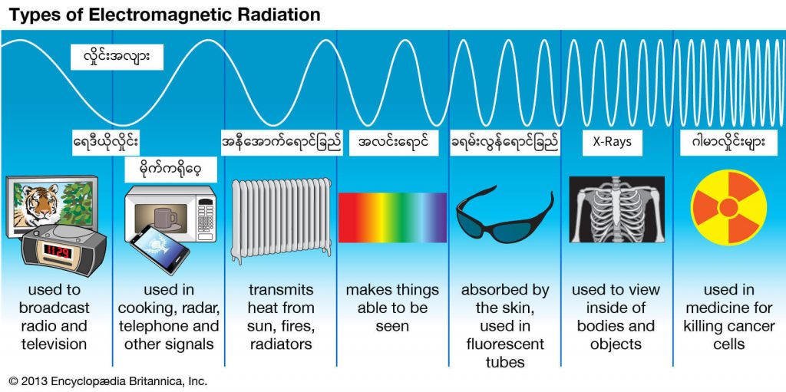
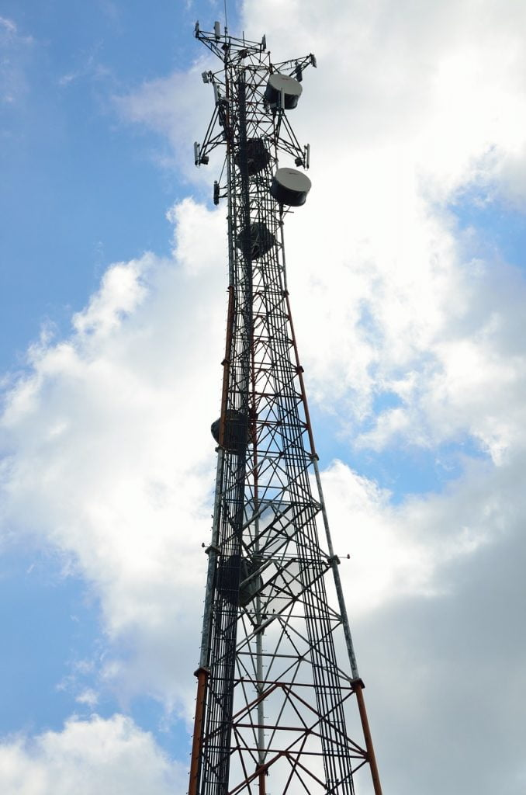
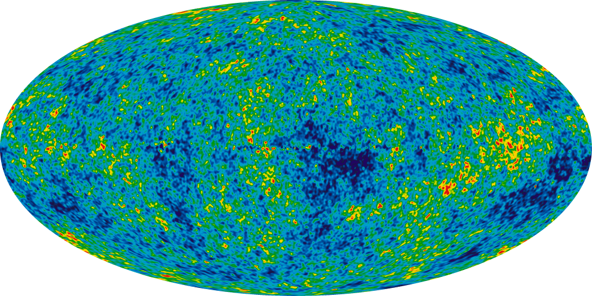

မိုက်ကရိုလှိုင်းတွေကို နေရာများစွာမှာ အသုံးချကြပါတယ်။ လူအများဆုံး သိတာကတော့ မိုက်ကရိုဝေ့နဲ့ ဟင်းနွှေးတာပဲ ဖြစ်ပါတယ်။ ဒါ့အပြင် သူ့ကို ရေဒါနဲ့ ရေဒီယို ဆက်သွယ်ရေး တွေမှာလဲ ကျယ်ကျယ်ပြန့်ပြန့် သုံးစွဲကြပါတယ်။
လျှပ်စစ်သံလိုက်လှိုင်းတွေဟာ လှိုင်း (wave) တွေအဖြစ် သော်လည်းကောင်း၊ အမှုန် (particle) တွေအဖြစ် သော်လည်းကောင်း ရွှေ့လျားကြပါတယ်။
ဒီလိုရွှေ့လျားတဲ့ အခါမှာ လှိုင်းနှုန်းခွင် အမျိုးမျိုးကို အသုံးပြုပြီး ရွှေ့လျားကြတာပါ။ ဒီလှိုင်းတွေကို လျှပ်စစ်သံလိုက်ရောင်စဉ် (electromagnetic spectrum) လို့ ပညာရှင်တွေက အမည်ပေးထားပါတယ်။
ဒီ လျှပ်စစ်သံလိုက်ရောင်စဉ်ကို အပိုင်း ၇ ပိုင်း ခွဲခြားထားပါတယ်။ တစ်ပိုင်းနဲ့ တစ်ပိုင်း လှိုင်းအလျှား တိုလာပြီး လှိုင်းကြိမ်နှုန်းနဲ့ စွမ်းအင်ကတော့ မြင့်တက်လာပါတယ်။
(လှိုင်းကြိမ်နှုန်း ဆိုတာက တစ်စက္ကန့် အတွင်း ဘယ်နှစ်ကြိမ် တုန်ခါသလဲ ဆိုတာကို တိုင်းတာတာ ဖြစ်ပါတယ်။ လှိုင်းအလျှားကတော့ လှိုင်းတွေရဲ့ ထိပ်တွေ တစ်ခုနဲ့ တစ်ခု အကွာအဝေးကို တိုင်းတာ ဖြစ်ပါတယ်။ လှိုင်းကြိမ်နှုန်း (frequency) နဲ့ လှိုင်းအလျား (wave length) တို့ဟာ ပြောင်းပြန် အချိုးကျပါတယ်။ ဆိုလိုတာက လှိုင်းကြိမ်နှုန်း မြင့်ရင် လှိုင်းအလျှား တိုပြီး ကြိမ်နှုန်း နိုမ့်ရင်တော့ လှိုင်းအလျှားက ရှည်လာပါတယ်။)
အနိမ်ဆုံးက ရေဒီယိုလှိုင်းတွေ ရှိပါတယ်။ သူတို့က လှိုင်းကြိမ်နှုန်းနိမ့်ပြီး လှိုင်းအလျှားရှည်ပါတယ်။ ဒီရေဒီယိုလှိုင်းတွေကမှ တဖြည်းဖြည်း လှိုင်းနှုန်းမြင့်လာပြီး လှိုင်းအလျှား တိုလာတဲ့ ရောင်စဉ်တွေကတော့ မိုက်ကရိုဝေ့လှိုင်း၊ အင်ဖရာရက် အပူလှိုင်း၊ အလင်းရောင်စဉ်၊ ခရမ်းလွန်ရောင်ခြည်၊ X-ray ဓါတ်မှန်လှိုင်းတွေနဲ့ နောက်ဆုံး ဂါမာလှိုင်းတွေပဲ ဖြစ်ပါတယ်။
လျှပ်စစ်သံလိုက် ရောင်စဉ်တွေထဲမှာ မိုက်ကရိုလှိုင်းတွေဟာ ရေဒီယိုလှိုင်းတွေနဲ့ အင်ဖရာရက် အနီအောက် ရောင်ခြည် အပူလှိုင်းတွေ ကြားမှာ ရှိပါတယ်။

ရေဒါနဲ့ ဆက်သွယ်ရေး
မိုက်ကရိုဝေ့တွေကို အဓိကအသုံးပြု တာကတော့ မျက်မြင် ဆက်သွယ်ရေးမှာ အသုံးပြုတာပါပဲ။ တယ်လီဖုန်းနဲ့ အင်တာနက် ဆက်သွယ်ရေးအတွက် တစ်နေရာကနေ တစ်နေရာကို ဆက်သွယ်တဲ့ အခါမှာ မိုက်ကရိုဝေ့ တာဝါ မျှော်စင်တွေ ဆောက်ပြီး ဆက်သွယ်တာပါ။ဒီမိုက်ကရိုဝေ့တာဝါတိုင် တွေဟာ အဝေးကကြည့်ရင် သိသာပါတယ်။ သူတို့ပေါ်မှာ ချပ်ပြား အဝိုင်းကြီးတွေ အကြီးကြီး ရေပြင်ညီ ချိန်ထားတာ တွေ့ရပါလိမ့်မယ်။
ဒီအဝိုင်းကြီးတွေက ဆက်သွယ်ရေး အင်တင်နာတွေ ဖြစ်ပြီး သူတို့ကို နောက်တာဝါတိုင်က ဆက်သွယ်ရေး အင်တင်နာနဲ့ တည့်တည့် ချိန်ထားတာပါ။ ကြားမှာ တောင်တို့၊ သစ်ပင်တို့ ခံနေရင် ဆက်သွယ်လို့ မရတော့ပါဘူး။ တာဝါတိုင် နှစ်တိုင်ကြားက လမ်းကြောင်းက ရှင်းနေဖို့ လိုပါတယ်။ ဒါ့ကြောင့် သူတို့ကို အများအားဖြင့် တောင်ထိပ်တွေမှာ ဆောက်ထားတာ တွေ့ရတတ်ပါတယ်။

မီးဖိုထဲမှာ
ခေတ်ပေါ် မီးဖိုတစ်ခုမှာ မိုက်ကရိုဝေ့ မီးဖိုတွေဟာ မရှိမဖြစ် အသုံးအဆောင် တစ်ခုဖြစ်ပါတယ်။ မိုက်ကရိုဝေ့ မီးဖိုဟာ အစားအသောက်တွေကို မြန်မြန်ဆန်ဆန် နွှေးပေးနိုင်ပါတယ်။ မိုက်ကရိုဝေ့ လှိုင်းတွေဟာ အစားအစာထဲမှာ ပါတဲ့ ရေမော်လီကြူး လေးတွေကို ပူအောင်လုပ်ပေးခြင်းနည်းနဲ့ အစာကို နွှေးပေးတာပါ။ ဒီလိုနွှေးတာ ဖြစ်လို့ အစားအသောက်တွေကို အလွန်မြန်ဆန်စွာ နွှေးပေးနိုင်ပြီး အပူပြန့်တာလဲ မျှပါတယ်။မိုက်ကရိုဝေ့မီးဖိုကို ရှာဖွေတွေ့ရှိခဲ့တာ မတော်တဆ တွေ့ရှိခဲ့တာပါ။ လွန်ခဲ့တဲ့ နှစ် ၇၀ လောက်က မိုက်ကရိုဝေ့ရေဒါတွေ သုတေသန လုပ်တဲ့ ပညာရှင် တစ်ယောက်က သူ့အိပ်ကပ်ထဲ ထည့်ထားတဲ့ သကြားလုံးတွေ အရည်ပျော်နေတာကို သတိထားမိတာကနေ မိုက်ကရိုဝေ့ရဲ့ အပူပေးနိုင်တဲ့ ဂုဏ်သတ္တိကို ရှာဖွေတွေ့ရှိခဲ့ ကြတာပါ။ ဒီကမှ မိုက်ကရိုဝေ့မီးဖိုတွေ တွင်တွင်ကျယ်ကျယ် အသုံးပြု လာကြတာပါ။
သဘာဝ မိုက်ကရိုဝေ့လှိုင်းတွေ
အာကာသထဲမှာ စကြာဝဠာကြီး စတင်ဖြစ်ပေါ်တုံးက ကျန်ခဲ့တဲ့ မိုက်ကရိုဝေ့လှိုင်းတွေ ရှိနေကြပါတယ်။ ဒီလှိုင်းတွေဟာ အလွန် အားနဲတဲ့ အတွက် အထူးပြုလုပ်ထားတဲ့ စမ်းသပ်ကိရိယာ တွေနဲ့ ရှာဖွေမှသာ တွေ့ရှိနိုင် ကြပါတယ်။ ဒါပေမယ့် ဒီလှိုင်းတွေဟာ စကြာဝဠာရဲ့ မူလပေါက်ဖွားစဉ်က အခြေအနေတွေကို ဖေါ်ပြနိုင်လို့ ပညာရှင်တွေ ကြိုးစားရှာဖွေ ခဲ့ပါတယ်။ ဒီလှိုင်းတွေကို ရှာဖွေတွေ့ရှိခဲ့တဲ့ နက္ခတ္တပညာရှင်နှစ်ယောက်ဟာ ၁၉၇၈ ခုနှစ်မှာ နိုဘယ်ဆု ချီးမြှင့်ခြင်း ခံခဲ့ရပါတယ်။